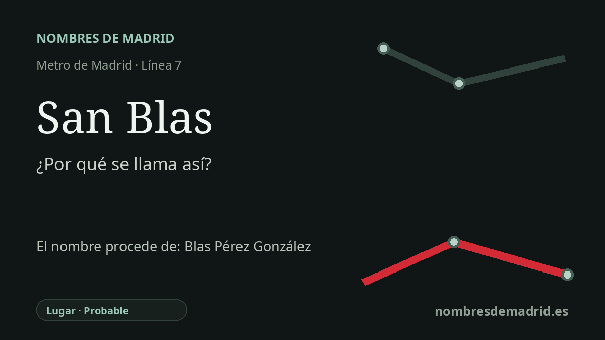

Publicado el · Investigación de Nombres de Madrid · Cómo verificamos cada origen · 9 fuentes consultadas
Respuesta rápida
La estación de San Blas toma el nombre del barrio al que da servicio. El nombre del barrio suele explicarse como un homenaje franquista a Blas Pérez González, pero las fuentes más claras localizadas lo presentan como una tradición transmitida, no como un acuerdo de denominación documentado.
La historia del nombre
La estación de San Blas toma su nombre visible de la zona de San Blas, en el este de Madrid. Es una parada de la línea 7 que sirve al actual distrito de San Blas-Canillejas, y el nombre de transporte sigue el topónimo urbano del entorno, no una calle concreta, un edificio ni un santuario situado en la propia estación.
El origen más profundo es menos directo. Varias historias locales del distrito explican que el nuevo barrio recibió el nombre de San Blas como homenaje a Blas Pérez González, jurista y político del franquismo que fue ministro de la Gobernación entre 1942 y 1957. Según esa explicación, el 'San' de apariencia religiosa no sería el origen principal, sino una forma de convertir el nombre de pila del ministro, Blas, en topónimo.
La cronología encaja con el desarrollo de la zona. Canillejas fue anexionado a Madrid por decreto en 1949, y los campos situados al este de la ciudad se transformaron durante la emergencia de vivienda de la posguerra. La operación del Gran San Blas comenzó a finales de los años cincuenta de la mano de la Obra Sindical del Hogar y del aparato oficial de vivienda, creando uno de los grandes barrios obreros de Madrid.
Ese contexto urbano es importante porque la estación llegó después, cuando el nombre del barrio ya estaba asentado. El primer tramo de la línea 7 unió Las Musas y Pueblo Nuevo en 1974, llevando el metro a este distrito obrero del este tras años de comunicaciones deficientes. Por eso el nombre de la estación conserva una denominación planificada de mediados del siglo XX, no un topónimo rural antiguo.
El supuesto homenaje al ministro no está plenamente documentado. Las fuentes de esa atribución son relatos locales secundarios que dicen que el barrio 'se dice' que recibió el nombre en honor de Blas Pérez, mientras que las fuentes municipales y arquitectónicas más autorizadas confirman la creación del Gran San Blas pero no el acto de denominación. La estación se llama con seguridad por el barrio de San Blas; el origen en Blas Pérez González es probable, pero aún carece de una fuente primaria municipal, ministerial o de la Obra Sindical.